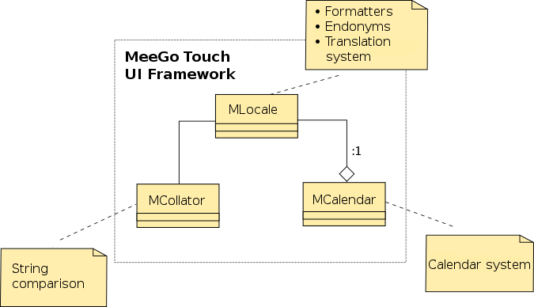

| Home · All Classes · Main Classes · Deprecated |
This section provides guidelines for developing locale-aware applications for the MeeGo Touch UI Framework. The guidelines are mainly intended for developers, translators, and user interface designers.
Generally, as the MeeGo Touch UI Framework uses Qt as its base, some of the Qt internationalisation practices also apply. However, since the MeeGo Touch UI Framework provides additional functionalities, it is recommended that developers always use MeeGo Touch UI Framework classes to achieve full internationalisation support in their applications.
The general internationalisation guidelines for user interface designers can also be applied to other projects.

The following languages are officially supported both for writing systems and text rendering:
Although the implementation contains support for several calendar systems, officially the MeeGo Touch UI Framework currently supports only Gregorian and Islamic calendar.
The MeeGo Touch UI locale system uses the following main settings:
| gconf key | Description | Example value |
|---|---|---|
| /meegotouch/i18n/language | Main language | en_US |
| /meegotouch/i18n/lc_time | Date, time, and calendar | ar@calendar=islamic |
| /meegotouch/i18n/lc_collate | Sorting | de_DE@collation=phonebook |
| /meegotouch/i18n/lc_numeric | Number format | hi |
| /meegotouch/i18n/lc_monetary | Currency format | fi_FI@currency=EUR |
Each of these settings can be set to an ICU locale specifier. For instructions, see ICU User Guide.
The value of /meegotouch/i18n/language (“Language”) tells the locale system the UI language of the device. This affects all UI texts, the writing direction and widget layouts. However, it does not affect the user content, such as the language for the browser content.
“Language” is also used as the default for time, date, calendar, sorting, number format, and currency format if the more specific settings are empty.
“LcTime” selects how time and date are formatted. If it is left empty, the value of “Language” is used. For example, ar@calendar=islamic uses Arabic date and time formats with the Islamic calendar, ar@calendar=gregorian uses Arabic date and time formats with the Gregorian calendar, and fi_FI uses Finnish formatting rules for time and date.
“LcCollate” selects how textual data is sorted. If it is left empty, the value of “Language” is used. Examples: de_DE@collation=phonebook sorts in the way German phone books are sorted, de_DE@collation=standard (or de_DE ) sorts in the “normal” way German dictionaries are sorted. zh_CN@collation=pinyin sorts Chinese according to the pinyin phonetics, zh_CN@collation=stroke sorts Chinese according to the stroke count of the characters.
“LcNumeric” selects how numbers are formatted. If it is left empty, the value of “Language” is used. Examples: hi formats numbers according to the rules for the Hindi language, using localised digits. In other words, Devanagari numerals (०,१,२,३,४,५,६,७,८,९) ar formats numbers using Eastern Arabic numerals (٠,١,٢,٣,٤,٥,٦,٧,٨,٩), de_CH formats according to Swiss German by using apostrophes to separate thousands (12'345'670.89), and en_US formats the American English way (12,345,670.89).
“LcMonetary” selects how currency amounts are formatted. If it is left empty, the value of “Language” is used.
A MeeGo Touch UI application normally uses the system default MLocale object:
MLocale myLocale; // get the current locale
If the application needs to use different locale settings than the system locale, an MLocale is created by making an instance of a MLocale object. For example:
MLocale locale ("fi_FI");
where "fi" and "FI" define that the Finnish language in used in Finland.
To collate, get the comparator with MLocale::collator() method or create it MCollator() for default locale collator. This object acts as a functor and can be passed to Qt's qSort() or any other sorting methods. The comparator basically compares two items as "lessThan" function and returns true if the first parameter should come before the second one.
If some other collation system than the locale's default is needed, use setCollation() method before getting the comparator. To start sorting, use Qt's qSort() function.
To use the default collation system:
QStringList sl; // This contains the strings which need to be sorted ... MLocale myLocale; // get the current locale MCollator c = myLocale.collator(); // getting the comparator ... qSort(sl.begin, sl.end, c); // start to sort! ...
Some locales support different collation systems, for example the German locale supports sorting the way it is done in German dictionaries (locale name “de_DE@collation=standard” or just locale name “de_DE” as this is the default sort order for the German locale) and it also supports sorting the way it is done in German phonebooks (locale name “de_DE@collation=phonebook”). For example, if you want to sort something according to the German phonebook sort method, it can be done like this:
QStringList sl; // This contains the strings which need to be sorted ... // create a locale with German phonebook sort order: MLocale myLocale("de_DE@collation=phonebook"); MCollator c = myLocale.collator(); // getting the comparator ... qSort(sl.begin, sl.end, c); // start to sort! ...
MeeGo Touch UI supports the sortoptions libicu supports for a certain locale. For the Chinese locales, the supported sort options are:
MeeGo Touch UI comes with several formatters for several data types. (Almost) Always use the formatters before displaying locale-dependant data on the screen to achieve uniformity and consistency in the data presentation.
Use formatNumber() method to format numbers. It works with qlonglong, short, int, double, and float data types.
... MLocale myLocale; // get the current locale ... int number = 1234; QString formattedNumber = myLocale.formatNumber(number); // format the number, the result is in QString ...
Use formatDateTime() method to format the date and time.
... MLocale myLocale; // get the current locale ... QDateTime now = QDateTime::currentDateTime(); QString formattedDateTime = myLocale.formatDateTime(now); ...
As mentioned previously, date format can also be affected by the device language, region, and calendar settings.
... MLocale myLocale; // get the current locale ... QDateTime now = QDateTime::currentDateTime(); QString formattedDateTime = myLocale.formatDateTime(now, MLocale::IslamicCalendar); // format using IslamicCalendar ...
Custom formatting is supported with ISO-14652 format (also used in libc's strftime ) by using formatDateTime() .
Use formatPercent() method to format a percentage value.
... MLocale myLocale; // get the current locale ... double percent = 0.29; // = 29% int decimals = 2; QString formattedPercentage = myLocale.formatPercent(percent, decimals); ...
Use formatCurrency() method to format amounts of money.
... MLocale myLocale; // get the current locale ... double money = 150.40; QString currency = "EUR"; QString formattedCurrency = myLocale.formatCurrency(money, currency); ...
Use MName class to populate the name information, and use MLocale::formatName() method to format the name.
Use MAddress class to populate the address information, and use format() method to format the name using the format specified as parameter.
MLocale provides Gregorian as well as non-Gregorian calendar support. Use formatDateTime() method to format the date according to the selected calendar. To set another calendar than the default Gregorian calendar, use setCalendarType() method.
MLocale myLocale; // get the current locale ... myLocale.setCalendarType(MLocale::IslamicCalendar); // set the calendar to use Islamic calendar ...
To change other calendar settings, use the MCalendar object.
In general, it is not possible to iterate words in a string by searching whitespace. For example, the Thai language just concatenates words and in the Chinese language one character is a word. Thus, an MBreakIterator class can be used. It is constructed with a locale and a string, and it provides an interface for iterating word boundaries. The following example iterates word boundaries from beginning to end:
MLocale myLocale; // current locale QString text("this is text to be iterated"); MBreakIterator iterator(myLocale, text, MBreakIterator::WordIterator); while (iterator.hasNext()) { int next = iterator.next(); ... }
The MeeGo Touch UI Framework can use both the Qt standard tr() method or the ID-based qtTrId() method. For the Nokia internal localisation process, only qtTrId() should be used. Other parties using logical IDs instead of engineering English IDs for the UI messages may also find qtTrId() useful.
Engineering English is commonly used for the message IDs in the open source community. However, the logical ID approach uses message IDs which are guaranteed to be globally unique.
With qtTrId(), the logical ID is an argument of the function and the engineering English is supplied as a comment above. For an example, see the Qt documentation of qtTrId(), reproduced here for convenience:
//% "%Ln fooish bar(s) found.\n" //% "Do you want to continue?" QString text = qtTrId("qtn_foo_bar", n);
If there are no translation files available at all, qtTrId() returns the logical ID. However, this does not look good and makes testing the user interface more difficult.
However, if the code uses qtTrId() with the special engineering English comments, .qm files with engineering English translations can be generated automatically. To generate files automatically:
1. Create a subdirectory translations/ somewhere in your source tree. In that folder, create a translations.pro file with the contents:
LANGUAGES = # empty if only engineering English is needed!
CATALOGNAME = foobar # what ever catalog name you want to use
SOURCEDIR = $$PWD/.. # more then one directory is possible
TRANSLATIONDIR = $$PWD
include($$[QT_INSTALL_DATA]/mkspecs/features/meegotouch_defines.prf)
include($$[QT_INSTALL_DATA]/mkspecs/features/meegotouch_translations.prf)
2. After creating the extra translations/translations.pro file, add the translations/ directory to the list of sub-directories in a .pro file higher up in the directory hierarchy. For example:
SUBDIRS = \
src \
translations \
...
A foobar.ts and a foobar.qm file which contain the engineering English translations are automatically generated when calling “make” for your project. Additionally, “make install” installs foobar.qm to the usual place. For more information, see Translation data storage.
Minor detail: with the above setup, when creating foobar.qm from foobar.ts, lrelease uses the option -markuntranslated to prepend the string “!! ” at the beginning of each engineering English string. This means that if the engineering English string in the source code is “Hello”, it is written as “!! Hello” into the foobar.qm file and displayed as “!! Hello” at runtime. Thus, it makes it obvious that engineering English for testing purposes is displayed and not “real” English translations.
To set up a translation system using qtTrId(), you can use the following code snippets in your main function:
By default, the system uses the name of the application executable (without the directory path) as the name for the translation catalog file and loads this catalog automatically. Thus, you can immediately start using qtTrId():
... int main(int argc, char** argv){ ... MApplication app (argc, argv); ... //% "hello" qtTrId("xxx_hello"); ... } ...
In the above example, if the application executable is, for example, /usr/bin/foo, which means that the base file name of the executable is foo, the translation catalog <top-directory>/foo_<locale-code>.qm is used.
If you need to specify a file for the translation catalog which does not have the same name as the executable, you can use the optional third parameter appIdentifier of the MApplication constructor. For example:
... int main(int argc, char** argv){ ... MApplication application(argc, argv, "bar"); ... //% "hello" qtTrId("xxx_hello"); ... } ...
In the above example, the translation catalog <top-directory>/bar_<locale-code>.qm is used, regardless of the file name of the application executable.
Note: In addition to localisation files, the appIdentifier is also for themes. This means that if you change the appIdentifier, it also affects themes. This is usually not a problem because in most cases these should be kept the same, if possible.
When it is not possible to use the appIdentifier to specify which translation catalog is loaded, use the installTrCatalog() function to load a translation catalog with a completely different name. For example:
... int main(int argc, char** argv){ ... MApplication app (argc, argv); // create a MLocale. Without parameters in the constructor, // it gets a copy of the system default locale, which may already // have some translation catalogs, for example it usually already // has the “common” translation catalog. MLocale locale; // add a different translation catalog for this locale. // This catalog is added to the list of already loaded catalogs. // Catalogs loaded last are used with highest priority. locale.installTrCatalog("othercatalog"); // the order is important, set the locale as the default *after* // installing the translation catalog: MLocale::setDefault(locale); ... // Now the following call to qtTrId() will use messages // from the translation catalog file othercatalog_<locale-code>.qm // with highest priority: //% "hello" qtTrId("xxx_hello"); ... } ...
To set up your translation using the tr() method used in regular Qt programs, you can use the installTrCatalog() method. For example:
... int main(int argc, char** argv){ ... MApplication app (argc, argv); // create a MLocale. Without parameters in the constructor, // it gets a copy of the system default locale, which may already // have some translation catalogs, for example it usually already // has the “common” translation catalog. MLocale locale; // install the catalog for use with tr(). It is probably // a good idea to use the application name for "mycatalog": locale.installTrCatalog("mycatalog"); // Make the locale the default to enable the message catalog just // installed above for tr(). The order is important, do this *after* // installing the translation catalog: MLocale::setDefault(locale); ... // Now you can use tr() as in regular Qt programs: tr("hello"); ... } ...
This section provides an example of setting up a translation system in a library. In this example, MApplication “foo” uses a library “libbar”, which also uses the MeeGo Touch Framework and has its own translations in files such as libbar_<locale_name>.qm.
There are several ways to load the “libbar” translation catalog.
For example, you can let the application “foo” load it:
... int main(int argc, char** argv){ ... MApplication app (argc, argv); ... // translations from the “foo” translation catalog // can already be used without any setup when the binary // name is identical to the catalog name: //% "hello" qtTrId("qtn_foo_hello"); ... // get a copy of the system default locale // which already has the translation catalogs for “common” and “foo” // installed:create a MLocale. Without parameters in the constructor, MLocale locale; // add a the “libbar” translation catalog: locale.installTrCatalog("libbar"); // set the locale with the “libbar” catalog added as the // new system default: MLocale::setDefault(locale); ... // and a call of a function in the library “libbar” // may use messages from the “libbar” translation catalog: ... libbar_some_function(); ... } ...
However, the application “foo” needs to know how the translation catalog of “libbar” is called and may even require packages such as “libbar-l10n-*”, which creates unnecessary dependencies between “foo” and “libbar”. Thus, it is recommended that you let the “libbar” library load the “libbar” translations. This means that “libbar” includes the following initialisation function:
...
void libbar_init() {
...
MLocale locale; // get copy of system locale
locale.installTrCatalog("libbar"); // add a the “libbar” translation catalog
MLocale::setDefault(locale); // set new system default with “libbar” catalog added
...
// other initialization stuff if necessary
...
}
...
Thus, the application “foo” does not have to load the translations for “libbar” and only does:
... int main(int argc, char** argv){ ... MApplication app (argc, argv); ... // translations from the “foo” translation catalog // can already be used without any setup when the binary // name is identical to the catalog name: //% "hello" qtTrId("qtn_foo_hello"); ... // initialize “libbar” which also installs the “libbar” // catalog into the default system locale: libbar_init(); // now a call of a function in the library “libbar” // may use messages from the “libbar” translation catalog: ... libbar_some_function(); ... } ...
Instead of having a public initialisation function in “libbar”, you can also make “libbar” call some internal initialisation code when any public function of “libbar” is used for the first time. This means that you can design “libbar” so that the following code works:
... int main(int argc, char** argv){ ... MApplication app (argc, argv); ... // translations from the “foo” translation catalog // can already be used without any setup when the binary // name is identical to the catalog name: //% "hello" qtTrId("qtn_foo_hello"); ... // Calling any public function in the library “libbar” // triggers installation of the “libbar” translation catalog // into the default system locale and “libbar” can then // use messages from its translation catalog: ... libbar_some_function(); ... } ...
Whether a special initialisation function is used or not, the important thing is that “libbar” installs its translation catalog into the system default locale. The application “foo” then does not need to know how the catalog is called and does not need to require translation packages of “libbar”. “libbar” should require its translation package of course. But this way of doing it reduces the dependencies between “foo” and “libbar”.
qtTrId() is used to translate the UI messages.
QString qtTrId ( const char * id, int n = -1 )
id is the logical name for a UI message which needs to be translated. If n >= 0, all occurrences of %Ln or %n in the resulting string are replaced with a decimal representation of n. In addition, depending on n’s value, the translation text may vary.
The difference between %Ln and %n is that %Ln may be replaced using localised numerals such as Arabic-Indic numerals in Arabic locales, whereas %n is always replaced using Arabic (= Western) numerals.
qtTrId() is useful only if the project is using logical names such as the UI message. If your project is using an English string, use tr() instead.
The positional parameters %1 to %99 and %L1 to %L99 which are used in QString can also be used in translations for the MeeGo Touch UI Framework. For a description of %L1 to %L99, see also the documentation of QLocale.
For parameters which are integer numbers, %L1 to %L99 are a better choice than %1 to %99 because %L1 to %L99 automatically do locale specific number formatting which achieves the same results as using MLocale’s formatNumber() for the current system locale.
For example, if an application is running with the language locale settings set to Arabic to get Arabic translations (for example, if the gconf key “/meegotouch/i18n/language” is set to “ar”) and the numeric locale settings are also set to Arabic to get Arabic number formatting (for example, if the gconf key “/meegotouch/i18n/lc_numeric” is also set to “ar” or is empty and the numeric locale settings are inherited from the language settings).
If a message ID is translated using qtTrId("xx_some_message_id"), and the Arabic translation of this is “%L1 %2”, the following example code illustrates how numbers used as parameters are formatted:
QString translation = qtTrId("xx_some_message_id"); // “translation” now contains “%L1 %2”. translation.arg("123456.7").arg("123456.7"); // The line above returns “123456.7 123456.7”. // // I.e. if strings are used as the arguments // there is no difference in the behaviour of %L1 and %2. translation.arg(123456).arg(123456); // The line above returns “١٢٣٬٤٥٧ 123457” // // Here the arguments are numbers and we can see the // difference: In case of %L1 the number is formatted // by using QLocale which is set by MLocale to the numeric // settings of MLocale. Therefore, %L1 is replaced by // Arabic-Indic numerals here. However, %2 is still replaced // by Western-Arabic numerals, and has no thousands separators either. // In English locale the replacement for %2 would be “123457” // and not “123,456”, the place holders %1 to %99 // never do any automatic locale specific number formatting. translation.arg(123456.7, 0, 'g', 10).arg(123456.7, 0, 'g', 10); // The line above returns “١٢٣٬٤٥٦٫٧ 123456.7” MLocale locale; translation.arg(locale.formatNumber(123456.7)).arg(locale.formatNumber(123456.7)); // The line above returns “١٢٣٬٤٥٦٫٧ ١٢٣٬٤٥٦٫٧” // // Here the number formatting is done using MLocale. // locale.formatNumber(123456.7) already returns a QString // containing “١٢٣٬٤٥٦٫٧”, i.e. the arguments used for %L1 // and %2 in the translations are not numbers but QStrings. // Therefore, no further formatting is done by %L1 and %2.
If you pass an integer number as the argument from L1 and let QLocale format that number, this always gives the same result as if you pass the result of formatNumber() using the system MLocale for that integer. The reason is that the MeeGo Touch Framework always sets QLocale to the value of the numeric setting of the system default MLocale and both the number formatter in MLocale and the number formatter in QLocale use the CLDR data for the number format.
Message IDs do not have to indicate whether the translation for this ID contains placeholders or not. For example, if the message ID is “xx_greet_user" and the English translation is “Hello 1”, the following code works fine:
// The following returns “Hello Joe” if the translation is “Hello %1”. // If no translation can be found it returns “xx_greet_user”: qTrId("xx_greet_user").arg("Joe");
It is possible to include placeholders in message IDs. For example, if the message ID for the translation is “xx_greet_user_1”, the following code works just as well:
// The following returns “Hello Joe” if the translation is “Hello %1” // If no translation can be found it returns “xx_greet_user_Joe”: qTrId("xx_greet_user_%1").arg("Joe");
Thus, it does not matter whether the placeholders are included in the actual message ID for a translation that contains the placeholders.
Although placeholders in message IDs are possible, the message IDs used by MeeGo Touch never contain any placeholders. The message IDs used in MeeGo Touch only use lowercase letters from “a” to “z” and underscores “_”.
This is perfectly OK and does not cause any problems for translations which use placeholders.
In a plural message, pass the number to select the correct plural translation as the second argument n in qtTrId(). This works the same way with qtTrId() as it does with tr().
int n = messages.count(); //% "%Ln message(s) saved" showMessage(qtTrId("xx_messages_saved", n));
Some languages have several plural forms. For these languages, the parameter “n” selects the appropriate translation. For more information, see the “Qt Translation Rules for Plurals” and the “CLDR Language Plural Rules”.
However, for the MeeGo Touch UI Framework, it has been decided to use only 2 plural forms and only English rules. This means that the .ts translation files used by the MeeGo Touch UI Framework always contain only two different translations for plural and are always marked in the xml as English language translation files, even if the language is not English.
For example, if a .ts file for the English translation contains the following:
<?xml version="1.0" encoding="UTF-8"?> <TS language="en" version="3.0"> <context> <name>message_context</name> ... <message id="xx_amount_events" numerus="yes"> <source>%Ln event</source> <translation> <numerusform>%Ln event</numerusform> <numerusform>%Ln events</numerusform> </translation> </message> ... <message id="xx_time_day" numerus="yes"> <source>%Ln day</source> <translation> <numerusform>%Ln day</numerusform> <numerusform>%Ln days</numerusform> </translation> </message> ... </context> </TS>
The corresponding Russian translation file contains the following:
<?xml version="1.0" encoding="UTF-8"?> <TS language="en" version="3.0"> <context> <name>message_context</name> ... <message id="xx_amount_events" numerus="yes"> <source>%Ln event</source> <translation> <numerusform>%Ln событие</numerusform> <numerusform>Событий: %Ln</numerusform> </translation> </message> ... <message id="xx_time_day" numerus="yes"> <source>%Ln day</source> <translation> <numerusform>%Ln день</numerusform> <numerusform>%Ln дн.</numerusform> </translation> </message> ... </context> </TS>
Note: This Russian translation file has “language="en"” in the header. Thus, English rules are used to select the plural forms. This means that the first plural form is selected if “n” is equal to 1, and the second plural form is selected for all other cases.
Usually, Russian uses one plural form for “n” in 1, 21, 31, 41, 51, 61…, another one for “n” in 2-4, 22-24, 32-34…, and yet another one for “n” in 0, 5-20, 25-30, 35-40….
If only 2 forms with English rules are used as above, this means that only “n” equal to 1 is special cased and the second plural form has to be translated in a way that it is acceptable for all other values of “n”.
In the Russian example translation file above, this is, first of all, achieved by abbreviating. In other words, “%Ln дн.” is used for all “n” that are not equal to one, thus hiding the different plural forms with the abbreviation dot. Secondly, the number is grammatically “detached”. This means that if you write “Событий: %Ln”, the part of the translation before the “:” is detached from the part with the number, and the word “Событий” does not need to change for different values of “n”.
Use the placeholder %Ln and not %L1 if a message is in plural form. The source code should be as follows:
int n = messages.count(); //% "%Ln message(s) saved" showMessage(qtTrId("xx_messages_saved", n));
The .ts file with the translations should be as follows:
<?xml version="1.0" encoding="UTF-8"?> <TS language="en" version="3.0"> <context> <name>message_context</name> ... <message id="xx_amount_events" numerus="yes"> <source>%Ln event</source> <translation> <numerusform>%Ln message saved.</numerusform> <numerusform>%Ln messages saved.</numerusform> </translation> </message> ... </context> </TS>
The second parameter “n” of qtTrId():
If %L1 is used instead of %Ln in the translation, the second parameter of qtTrId() still selects the correct translation for the value of “n” but does not replace %L1. In this case the following code displays “%L1 messages saved.”:
showMessage(qtTrId("xx_messages_saved", 2));
If you know that the plural translations mistakenly use %L1 instead of %Ln, you can work around the issue by using an extra .arg() in the code as follows:
showMessage(qtTrId("xx_messages_saved", 2).arg(2));
In this example, the “2” used as the second parameter selects the correct plural form, which means that “%L1 messages saved.” and the .arg(2) would replace the %L1 with 2 so the final result would be “2 messages saved.” as desired. But as soon as the translation is fixed to use the correct %Ln this code prints a warning:
QString::arg: Argument missing: "2 messages saved." , 2
The reason for this is that the .arg(2) tries to replace a missing %L1.
The following path is used to store the compiled translation data (in .qm format) on the device:
<top-directory>/<catalog-name>_<locale-code>.qm
top-directory can be anywhere on the device. locale-code is, for example, en_US for US English, en_GB for British English, zh_CN for Simplified Chinese, de_DE for German in Germany, and de_CH for Swiss German. <catalog-name> is usually the name of the application. If a translation for a more specific locale name such as en_US cannot be found, a less specific locale name such as en is tried. For example, if the application name is foo and the locale name is en_US, the first existing file from the following list is used:
<top-directory>/foo_en_US.qm <top-directory>/foo_en_US <top-directory>/foo_en.qm <top-directory>/foo_en <top-directory>/foo.qm <top-directory>/foo
For more information, see the documentation of QTranslator::load().
The top-directory used by default is /usr/share/l10n/meegotouch. This is defined as M_TRANSLATION_DIR in meegotouch_defines.prf which can be found in ./mkspecs/features/meegotouch_defines.prf` in the libmeegotouch source code.
`/usr/share/l10n/meegotouch` is also the default directory used by translation packages to store the .qm files. Applications can set additional search paths by using MLocale::setTranslationPaths() and MLocale::addTranslationPath() .
The following example illustrates the packaging of translations into debian packages using the demo application “widgetsgallery”:
| Package name | Contents |
| meegotouch-demos-widgetsgallery-l10n-engineering-english | /usr/share/l10n/meegotouch/widgetsgallery.qm /usr/share/doc/meegotouch-demos-widgetsgallery-l10n-engineering-english/widgetsgallery.ts /usr/share/doc/meegotouch-demos-widgetsgallery-l10n-engineering-english/changelog.Debian.gz |
| meegotouch-demos-widgetsgallery-l10n-ar | /usr/share/l10n/meegotouch/widgetsgallery_ar.qm /usr/share/doc/meegotouch-demos-widgetsgallery-l10n-ar/changelog.Debian.gz |
| ... | ... |
| meegotouch-demos-widgetsgallery-l10n-zh-cn | /usr/share/l10n/meegotouch/widgetsgallery_zh_CN.qm /usr/share/doc/meegotouch-demos-widgetsgallery-l10n-zh-cn/changelog.Debian.gz |
Every application that requires translations should also supply a debian package containing the “engineering English” translations. The package name for the engineering English translations should end with -l10n-engineering-english as in the above example. The package name “...-engineering-english” should make it clear that these are not real translations, but instead they are completely auto-generated from the source code.
In the above example, the package “meegotouch-demos-widgetsgallery-l10n-engineering-english” contains “widgetsgallery.qm” and “widgetsgallery.ts”. “widgetsgallery” is the name of the application executable. “widgetsgallery.ts” is automatically generated from the source code using “lupdate”. “widgetsgallery.qm” is automatically generated from “widgetsgallery.ts” using “lrelease”. The make files in the application source code should contain support to do this automatically when building the application without extra effort. The current source code of widgetsgallery already illustrates how to do this.
The “widgetsgallery.qm” file:
Is used at runtime by the application to display engineering English instead of message IDs to facilitate application testing when no real translations are available yet.
Supplies fallback engineering English when real translations are available but incomplete. Even if this should never occur with the final product, it can happen during development and testing. In that case, it is useful to have fallback engineering English available.
Allows you to easily extract a list of IDs which are actually used in the source code. You can use the “lconvert” tool to extract all IDs from a .qm file. If all MeeGo Touch applications supply “...-l10n-engineering-english” packages, you can easily install all the packages (for example with “apt-get”) and extract all the IDs which are actually used. You can then cross-check the IDs with the IDs used in the specifications and real translations.
“widgetsgallery” is only a test application used by the libmeegotouch developers for testing and demos. Therefore, the localisation department does not supply translations for “widgetsgallery”. The libmeegotouch developers supply some demo translations for “widgetsgallery” to test their code and to make sure the system works.
For this reason, “widgetsgallery” has some “real” translation packages such as “meegotouch-demos-widgetsgallery-l10n-zh-cn” containing “/usr/share/l10n/meegotouch/widgetsgallery_zh_CN.qm” (see the table above). In that respect, “widgetsgallery” is an exception.
For a “real” application, such as “camera”, which is intended to be shipped to the customer, the “real” translation packages are supplied by the translator, not by the developers. The developers only supply “camera-l10n-engineering-english” and the translator supplies all the other packages, such as “camera-l10n-ar”, “camera-l10n-zh-cn”, and so on.
As long as the real translations are still missing, the engineering English is displayed. As soon as the real translations are available and installed, they are used automatically. As the table above illustrates, there is no file conflict between the engineering English packages and the real translations. They can both be installed at the same time without problems.
For the final product, the engineering English packages can be omitted. If it has been verified during the testing phase that the “real” translations are complete, the engineering English is not needed anymore.
The translation of .desktop files for MeeGo Touch UI differs slightly from the usual practice of Freedesktop.org. The reason for this is that we have different localisation processes which make it impossible to modify the source of .desktop files during the build time. Thus, the .desktop file must contain at least two extra (key, value) pairs:
For example:
[Desktop Entry] # engineering english Name=Setting # logical name of "Setting" X-MeeGo-Logical-Id=xx_setting_something # the catalog name X-MeeGo-Translation-Catalog=meegotouchsettings
For the freedesktop specification of the .desktop files, see
http://standards.freedesktop.org/desktop-entry-spec/latest/
In MeeGo Touch UI, such .desktop files are parsed using MDesktopEntry.
Translations can have length variants, i.e. the original text can have several different translations which should express the same meaning but have different lengths.
The purpose of this feature is to use a longer, more verbose translation if the widget which shows the translation has enough space, for example in landscape mode. If the widget does not have enough space to show a long translation, for example in portrait mode, a shorter translation variant should be used automatically.
This feature can be sometimes useful but it also causes a lot of confusion and problems if not used correctly.
In this section I try to explain how it works, and what to do to avoid running in to problems.
Let’s start with an example how such a translation with length variants looks like in a .ts translation-file:
<message id="xx_enter_text">
<source>Enter text here</source>
<translation variants="yes">
<lengthvariant>Enter text here:</lengthvariant>
<lengthvariant>Enter text:</lengthvariant>
<lengthvariant>Text:</lengthvariant>
</translation>
</message>
Here we have 3 different length translations of the original text. The translations must be ordered according to their length, the longest translation first, the shortest translation last.
Now if such a .ts-file is converted into a binary .qm-file with lrelease, this file is installed and then qtTrId() is used in the program to fetch the translation like this:
QString translation = qtTrId("xx_enter_text");
// translation: “Enter text here:Enter text:Text:”
then the string returned by qtTrId() will contain all the length variants concatenated with the character
U+009C STRING TERMINATOR
as a separator between the variants. If such a string containing string terminator characters is painted into a label, QPainter checks whether the part up to the first terminator fits into the label, if yes it is used, if not the next part is tried. If the last part still does not fit, it is cut of or elided.
This works only in some widgets though, not in all. It does not work in widgets using QTextDocument, for example. That means it does not work in rich text labels and it does not work in labels which contain multiline text. If a string with length variants is painted into a widget which does not support it, the complete string including the string terminators is shown, the string terminators appear as boxes in most fonts.
If a translation which has lenghtvariants ends up to be used in a widget which does not support the length variants, for example a richt text label, one should check whether the translation should really use length variants at all. If the only use case is a widget where it does not work anyway, it is better not to create a translation withl engthvariants at all, i.e. it maybe a good approach to ask the translators not to use length variants there.
If the length variants cannot be removed from the translations then one can workaround the problem by using only the first or only the last length variant, for example:
QString shortTrans = qtTrId("xx_enter_text").split(QChar(0x9c)).last();
// shortTrans: “Text:”
QString longTrans = qtTrId("xx_enter_text").split(QChar(0x9c)).first();
// longTrans: “Enter text here:”
Another common mistake when using translations with length variants is to insert them into placeholders. The following example illustrates this:
QString trans1 = qtTrId("xx_usb_info_connected");
// trans1: “SB connected. %1 active.”
QString trans2 = qtTrId("xx_usb_mass_storage");
// trans2: “Mass storage modeMass st.”
QString trans3 = trans1.arg(trans2);
// trans3: “SB connected. Mass storage modeMass st. active”
By inserting the string trans2 which has length variants into the placeholder %1 in the string trans1, the resulting string trans3 became a string with length variants but with the two nonsensical parts:
“SB connected. Mass storage mode”
“Mass st. active”
This is another case where one should consider whether the length variants can be removed from the translation. If this cannot be done because the same translation is used in other places where the length variants are useful, the application can use the workaround to cut out only one length variant again before inserting, like this:
QString trans1 = qtTrId("xx_usb_info_connected");
// trans1: “SB connected. %1 active.”
QString trans2 = qtTrId("xx_usb_mass_storage");
// trans2: “Mass storage modeMass st.”
QString trans3 = trans1.arg(trans2.split(QChar(0x9c)).first());
// trans3: “SB connected. Mass storage mode active”
Yet another common mistake is concatenation of strings with length variants, like in this example:
QString trans1 = qtTrId("xx_string_a");
// trans1: “aaaaaa”
QString trans2 = qtTrId("xx_string_b");
// trans2: “bbbbbb”
QString trans3 = trans1 + ' ' + trans2;
// trans3: “aaaaaa bbbbbb”
Note that the result trans3 in the above example is now a string with 5 length variants but in a way that doesn’t make any sense anymore. As a workaround, if length variants cannot be removed from the translations, something like the following example can be used:
QString trans1 = qtTrId("xx_string_a");
// trans1: “aaaaaa”
QString trans2 = qtTrId("xx_string_b");
// trans2: “bbbbbb”
QString trans3 =
trans1.split(QChar(0x9c)).first()
+ ' '
+ trans2.split(QChar(0x9c)).first()
+ QChar(0x9c)
trans1.split(QChar(0x9c)).last()
+ ' '
+ trans2.split(QChar(0x9c)).last()
// trans3: “aaa bbba b”
i.e. concatenate the longest variants of trans1 and trans2 to get the longest variant of trans3 and the shortest variants of trans1 and trans2 to get the shortest variant of trans3 and concatenate the final longest and shortest variants into one string by adding a new string terminator character. When doing it this way, the result is a string with length variants which does make sense.
The current language setting is stored in the gconf key /meegotouch/i18n/language . You can use gconftool-2 to query the current language from the command line:
~$ gconftool-2 -g /meegotouch/i18n/language
ar
In the above example, the current language is Arabic.
You can also change the current language from the command line. For example, to set the current language to simplified Chinese, you can use gconftool-2 :
~$ gconftool-2 -t string -s /meegotouch/i18n/language zh_CN
To query the current language from a MApplication, use the following:
MLocale currentLocale; retrieves a copy of the system default locale that is connected to the gconf settings and follows the gconf settings.
You can also read the gconf settings directly:
MGConfItem languageItem("/meegotouch/i18n/language"); QString language = languageItem.value().toString();
To set the current language permanently from a MApplication, use the following:
MGConfItem languageItem("/meegotouch/i18n/language"); languageItem.set("zh_CN");
To set a new current language temporarily from a MApplication, use the following:
MLocale newLocale("zh_CN"); MLocale::setDefault(newLocale);
This does not change the gconf settings and, therefore, this change is lost as soon as one of the locale related gconf keys changes again and when the application restarts. Nevertheless, this can be useful for temporary changes for testing and it is currently the only way to change the current language on systems without gconf, such as Windows or Mac OS X.
If a system locale changes, either because a locale-related gconf key changed or because MLocale::setDefault() has been called explicitly by the application:
QEvent::LanguageChange is sent to the Application, if necessary. MWindow propagates a QEvent::LanguageChange to all MWidgets on the scene. A MWidget which receives this event by calls its retranslateUi() method. QEvent::ApplicationLayoutDirectionChange is sent to the Application, if necessary. MWindow propagates a QEvent::LayoutDirectionChange to all MWidgets as appropriate to enable the widgets to change their layout on the fly. settingsChanged() is emitted by the locale. localeSettingsChanged() is emitted by the MApplication . In most cases, an application does not have to use the above signals settingsChanged() and localeSettingsChanged() because most events such as reloading the translation catalogs already occur automatically. If retranslateUi() methods are implemented for the widgets used in the application, the language of the user interface changes automatically.
However, an application can use these signals optionally to perform special actions that do not occur automatically. For example:
main.cpp: #include "foohandlelocalechange.h" ... int main (int argc, char **argv) { ... FooHandleLocaleChange fooHandleLocaleChange; QObject::connect(&application, SIGNAL(localeSettingsChanged()), &fooHandleLocaleChange, SLOT(fooHandleLocaleChange())); ... }
where the FooHandleLocaleChange class is:
foohandlelocalechange.h:
class FooHandleLocaleChange : public QObject
{
Q_OBJECT
public slots:
void fooHandleLocaleChange();
};
foohandlelocalechange.cpp:
void FooHandleLocaleChange::fooHandleLocaleChange()
{
// do whatever is needed when the system locale
// changes, but remember that the basic stuff like
// reloading the translation catalogs and changing the layout
// direction already happens automatically.
//
// Therefore, unless you have very special needs, you do not
// need to do anything here.
//
// In any case, do *not* do anything here which changes the
// system default locale again because this would trigger
// an endless loop.
}
A MWidget which receives the QEvent::LanguageChange calls its virtual method
virtual void retranslateUi();
MWidgets can reimplement this retranslateUi() method to do whatever is necessary to retranslate itself. For example:
foopage.h
class FooPage : public MWidget
{
...
private:
...
MLabel* label;
...
};
foopage.cpp
void FooPage::createContent()
{
label = new MLabel();
retranslateUi();
}
void FooPage::retranslateUi()
{
...
//% "Label Text"
propertiesLabel->setText(qtTrId("qtn_label_text"));
...
}
This can be quite tricky in some cases but makes it possible to re-translate the user interface of an application on the fly if the locale settings change.
Widget mirroring refers to automatically reversing the direction of the widgets when the language is switched to right-to-left languages (such as Arabic or Hebrew). The widgets are arranged according to the natural flow of written text. Widget mirroring works automatically when the widgets are arranged using QGraphicsLayout or MLayout, with some exceptions with the specialist MLayout policies.
The layout direction is automatically set to the correct value by MApplication when the language is changed. The current layout direction can be obtained from MApplication::layoutDirection() . Note: During the application lifetime, the user can change the direction from the global setting.
If reversing the layout is not applicable for the widget that you are developing (for example, a number keypad), use QGraphicsWidget::setLayoutDirection() to override the layout direction. If you need to paint your widget differently in the right-to-left mode, simply call `qApp->layoutDirection()` and draw it accordingly. However, to implement a custom MAbstractLayoutPolicy, use the MLayout::layoutDirection() function instead so that the user can override it.
In advanced situations you can handle the QEvent::ApplicationLayoutDirectionChange() event directly in your widget's event handler.
The MeeGo Touch UI Framework uses the Qt character set conversion mechanisms directly. Therefore, developers can follow the Qt documentation to find out how to use the character set conversion functionalities.
Some languages require bigger font size than the one used in the English text. This may impact the layout design.
Some languages use plural and some do not. There are also languages that use more than one plural form.
Sorting order is dependent on the language setting. Always use MeeGo Touch UI collator to sort the strings.
In some languages there is no space between words. In most cases the line wrapping works and the system breaks the sentence into smaller chunks. If it fails, translators can use whitespace to force word boundaries.
When a sentence contains several variables, the order of the words in other languages may be different. Use QString place marker to define the order of the variables.
//% "Download and install %1 from %2? (Size is %L3 MB)" QString s = qtTrId("xx_download_and_install_from_size_mb") .arg(packageName).arg(repository).arg(size);
When translating, translators must also keep the place markers and put them in the correct places.
Note how L3 was used for the size parameter which is a number. Using L3 instead of just 3 has the advantage that localised numerals may be used. For example, if the language of the locale is Arabic and the numeric settings of the locale do not override it, L3 causes Arabic-Indic numerals to be used. If the translator wants to disable this behaviour for this particular message and force usage of Arabic (= Western) numerals always, no matter what the locale settings are, the translator can use 3 instead of L3 on purpose.
This is the general checklist which need to be confirmed during the development. Use only MeeGo Touch UI Framework locale system API to gain full internationalisation support. Use of POSIX and libc API is not recommended and may cause discrepancies in the representation of the data.
To do sorting, never use Qt's QString localeAwareCompare(), use MeeGo Touch UI collation system instead.
Some data types, such as graphics, icons, and sounds, sometimes need to be loaded according to the regional setting. In these cases, never hard code the data directory, instead use the regional setting information to build the string to point to the correct directory containing the data.
If you need to construct a string involving variables, never concatenate the UI strings. It can never be guaranteed that the string order is the same in all languages. Do not use the following:
QString message = "You have " + numMessages + " messages";
Instead use a variable when constructing the string:
//% "You have %Ln messages" QString message = qtTrId("xx_you_have_messages", numMessages);
Date, time, numbers, name, address, and currency data require formatting before they can be displayed on the screen. Never display unformatted data as it breaks the data presentation consistency. The data format should always follow the regional setting. Address data is an exception because it must be formatted according to the conventions of the country stated in the address.
In general, avoid using abbreviations as part of the UI string. Abbreviations are often misleading and confuse translators. Instead, increase the available space for the text.
Never use case to indicate functionality or emphasis. Some languages do not observe a distinction between lower-case and upper-case letters. Using upper case to indicate emphasis in the original English string may cause difficulties when translating the string into other languages.
You should also avoid using certain typeface and other similar methods to show emphasis because they are not supported by all writing systems.
Never use characters outside the ASCII range as part of original English strings. The font needed to display the character may not available in the device variant used for other languages.
Some languages create words by combining several words together. The resulting words are often longer than the original English string. Make sure that the UI allows the text expansion in these languages.
Some languages use their own digits (term: national digits) for numbers. Allow the usage of national digits in some cases (for example, when displaying general strings containing numbers) and force the UI to only use the Latin digits in other cases (for example, when displaying IP addresses).
Some languages use a different writing direction than Latin-based languages. The UI presentation generally follows the natural flow of the writing direction. Therefore, the widget layout and composition is mirrored when a language written from right to left is set as the device language. The mirroring is performed automatically by the MeeGo Touch UI Framework.
MeeGo Touch UI Framework currently only supports left-to-right and right-to-left writing directions.
Some languages distinguish between grammatical genders when referring to nouns.
Colours often have different meanings and connotations in different cultures. In the Western culture, red is often used to indicate stop or danger. In China, red is symbolic of celebration, luck and prosperity. White signifies purity, virginity, or death. In the Western culture it is the colour worn at weddings. In parts of Japan and China white is worn in funerals.
Never embed text and/or numbers in graphics. Translating graphics may be difficult and expensive.
Some icons or drawings are considered offensive in some cultures.
See section "Date and time" above.
| Copyright © 2010 Nokia Corporation | MeeGo Touch |